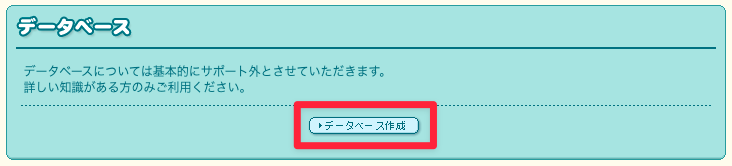
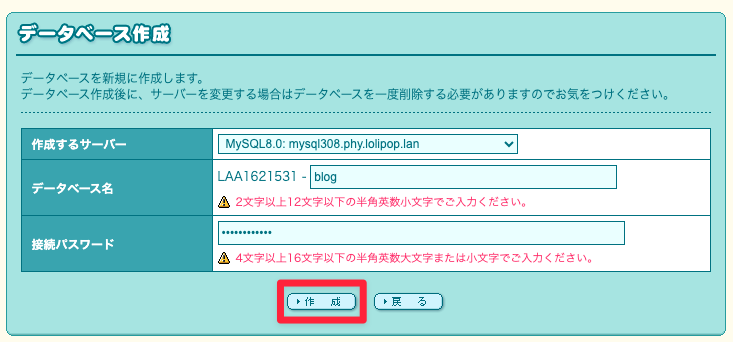
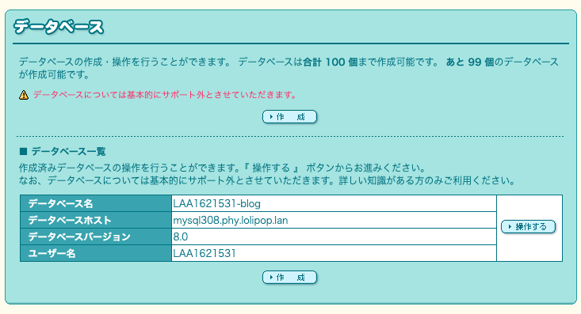
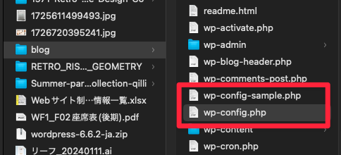
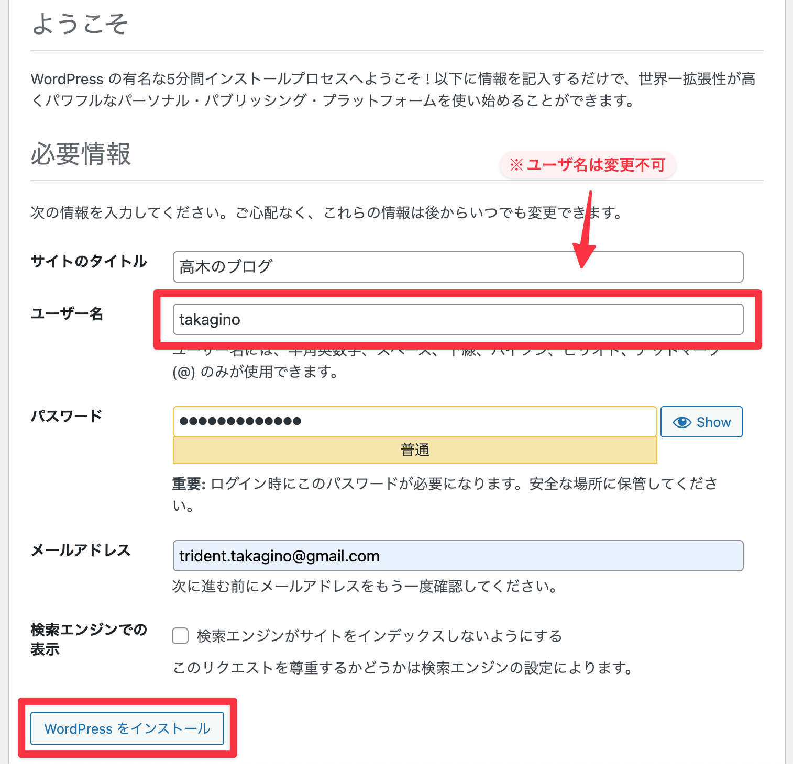

1. WordPressのインストール
ロリポップには、「WordPress簡単インストール」という機能があるが、今回は授業なのですべて手動で作業していく。
1-1. WordPressのダウンロード
公式サイトから「WordPress」の最新版をダウンロードし、解凍しておく。
1-2. データベースの作成
- 『ロリポップの管理画面メニュー > サーバーの管理・設定 > データベース』を選択。
- 「データベースを作成」ボタンをクリック。

- 情報の入力して「作成」ボタンをクリック。

- データベース名やホスト名は、後で使用するのでページは開いたままにしておく。

1-3. 「wp-config.php」の編集
ローカルでは、ブラウザ上でデータベース等の設定を行ったが、今回は直接ファイルを編集する。
- ダウンロード＆解凍したWordPressフォルダを「wordpress」から「blog」に変更。
※ファルダ名がURLの末尾になるので、任意の名前で。 - フォルダ内の「wp-config-sample.php」を複製する。
- 複製したファイルを「wp-config.php」に変更し、VSCodeで開く。

- 23行目あたりからの項目を以下のように変更する。（コピペするとスペースなどが入るので注意）
// ** Database settings - You can get this info from your web host ** // /** The name of the database for WordPress */ define( 'DB_NAME', 'データベース名' ); /** Database username */ define( 'DB_USER', 'ユーザー名' ); /** Database password */ define( 'DB_PASSWORD', 'パスワード' ); /** Database hostname */ define( 'DB_HOST', 'データベースホスト' ); /** Database charset to use in creating database tables. */ define( 'DB_CHARSET', 'utf8' ); /** The database collate type. Don't change this if in doubt. */ define( 'DB_COLLATE', '' ); - ついでに、69行目あたりからの接頭辞も変更しておく
/** * WordPress database table prefix. * * You can have multiple installations in one database if you give each * a unique prefix. Only numbers, letters, and underscores please! */ $table_prefix = 'blog_';
1-4. WordPressのアップロード
- 「blog（ダウンロードしたwordpress）」フォルダごと、「Cyberduck」にドラッグ&ドロップ。
- アップロードが完了したら、「http://自分のロリポップのURL/bolg」にアクセス。
- ブログの情報を入力し、「WordPressをインストール」をクリック。（※ユーザ名以外は後で変更可能）
